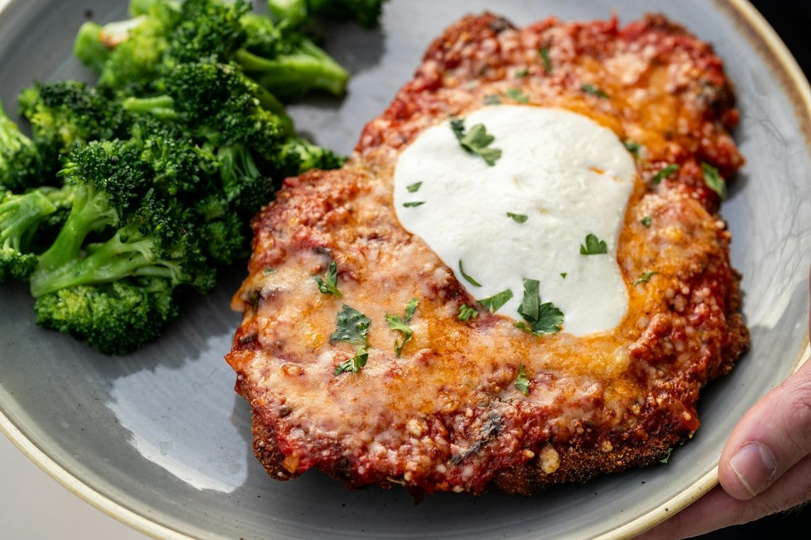

01
仕事の質はある。でもWebで伝わらない
施工の丁寧さや対応の速さが、写真の並べ方や文章の優先順位で埋もれてしまう。強みが「ある」のに「見えない」状態です。
ツナグWEB製作
Web Design / Brand Experience
技術も、こだわりも、人柄も。
その会社にしかない価値を、伝わるホームページへ。
中小企業・地域密着型事業者のためのホームページ制作。
魅力を整理し、デザインと情報設計で、問い合わせにつながるWebサイトをつくります。
Problem
現場の技術や対応力に自信があるのに、ホームページではそれが伝わらない——。中小企業でよくあるギャップです。見た目の問題だけでなく、「何を、どの順で、誰に伝えるか」が整理されていないことが少なくありません。

01
施工の丁寧さや対応の速さが、写真の並べ方や文章の優先順位で埋もれてしまう。強みが「ある」のに「見えない」状態です。
02
問い合わせの多くはスマートフォンから。文字が小さい、メニューが辿れない、電話ボタンが埋もれている——これだけで機会を逃します。
03
対応できる工事、料金の目安、流れ、エリア。お客様が判断に必要な情報が散らばっていると、比較の土俵にすら上がれません。
04
興味を持った瞬間に、電話・フォーム・LINEへ自然につながる配置がない。最後の一歩が、いちばん大切です。
Philosophy
Connect Value.
Design Impact.
ホームページ制作は、見た目を整える作業ではありません。その企業が持つ価値を整理し、伝わる形に変え、顧客との接点をつくることが目的です。
誰に向けて書くのか。最初に何を見せるのか。どこで安心してもらい、どこで問い合わせてもらうのか。デザインの前に、この設計があります。
01
既存サイト、チラシ、口コミ、現場写真。すでに持っている素材から「伝わる軸」を見つけます。
02
読みやすさ、タップ領域、電話・相談への導線。デザインの美しさと使いやすさを両立させます。
03
建設と美容室では、お客様が見るポイントが違います。業種に応じた情報設計を行います。
04
中小企業が無理なく始められるよう、範囲と費用の見通しを話し合いながら進めます。
Services
いま対応できる範囲を明確にしています。未確定の拡張サービスは、確定事項として記載していません。
01
事業内容の整理からデザイン、公開まで。初めてホームページを持つ方向けに、必要な情報を過不足なく構成します。
02
古い印象、分かりにくさ、スマホ非対応。現状の課題を洗い出し、伝わる構成へ組み直します。
03
文字サイズ、余白、メニュー、CTA配置を見直し、スマートフォンでもストレスなく読める表示に整えます。
04
お客様が知りたい順に情報を並べ、電話・フォーム・相談へ自然につながる導線を設計します。
05
強み、サービス内容、実績の見せ方、写真の使い方まで。その会社らしい言葉とビジュアルに落とし込みます。
Industries
お客様が知りたい情報も、問い合わせのきっかけも、業種ごとに異なります。実在の制作実績ではなく、業種別の設計方針としてご覧ください。
写真は雰囲気を伝えるためのサンプル素材です。特定の顧客・施工実績を示すものではありません。
Construction
施工内容、対応エリア、事例の見せ方、相談の流れ。信頼につながる情報を優先して配置します。
Facility
対応できる工事、エリア、緊急時の連絡手段。迷わず行動できる導線を重視します。
Automotive
サービス内容、店舗の特徴、車両情報の見せ方。来店・相談につながる構成にします。
Local Service
メニュー、料金、アクセス、予約方法。来店前の不安を減らす情報を分かりやすく並べます。
Works / Concepts
現時点で掲載できる実案件は限られるため、業種別に設計したコンセプトデザインを公開しています。架空案件であり、実在企業の実績ではありません。
Concept 01 — Fiction
「何を塗れるか」より先に、安心材料（エリア・流れ・相談）を見せる構成。スマホでは電話導線を常に近くに置きます。
Concept 02 — Fiction
専門用語を減らし、来店の心理ハードルを下げる。サービス一覧とアクセスを同じ視線の流れに置きます。
Concept 03 — Fiction
世界観を出しつつ、メニュー・料金・予約を埋もれさせない。余白と縦書きで、店舗の空気感を先に伝えます。
Process
実際の進め方の骨格です。納期や修正回数など、案件ごとに異なる条件はヒアリング後にご案内します。
現状の課題、希望、既存サイトの有無など、ざっくりした相談で構いません。無理な売り込みはしません。
事業内容、強み、お客様像、競合、使える写真や文章を整理。公開情報も踏まえて方針を立てます。
ページ構成とデザイン方針をご提案。伝わる順番と、問い合わせまでの流れを先に合意します。
実装しながら確認ポイントを共有。文言・写真・導線を整え、公開前のチェックを行います。
公開作業と、更新時に必要な案内をお渡しします。その後の改善相談も必要に応じてご相談ください。
※ スケジュールや修正の回数は、制作範囲と素材の準備状況によって変わります。確定条件はお見積り時にご説明します。
Price
安さだけを前面に出しません。いまお伝えできる金額の位置づけと、確認が必要な項目を分けて提示します。
Reference — 実績制作価格
これは「すべての制作が必ずこの金額で完了する」通常価格ではありません。実績制作価格としての参考値です。内容・ページ数・素材状況により変動します。
断定できない条件は、曖昧なまま掲載しません。相談時に次を整理します。
FAQ
Contact
制作の相談、既存サイトの改善、費用の質問——どれもお気軽に。まずは話を聞くだけでも構いません。
New Site
はじめてのホームページ制作のご相談
Renewal
既存サイトの改善・リニューアルのご相談
Pricing
費用感や制作範囲についてのご質問
電話・メール・LINE が未設定のため、送信可能なフォームは有効化していません。公開前に
index.html 先頭の tsunagu:email / tsunagu:tel / tsunagu:line
または assets/js/main.js の TSUNAGU_CONTACT を設定してください。